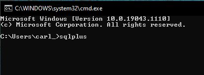

Please feel free to use the installation Guide for your own personal use, advancement and training. The material is designed for DBA120 Students, I kindly ask you respect the time and effort I have put into this work by not distributing copies, either in whole or in part, for your personal gain. Under no circumstances you can download, cache or host copies of the Guide on your own servers. |
Download Oracle zip file from Oracle database 19c download site (plain text link: https://www.oracle.com/database/technologies/oracle-database-software-downloads.html#19c) as shown below:
Click to Accept License Agreement radio button. The download file named "WINDOWS.X64_193000_db_home.zip" should then be available in your default download folder. It should look like this:
Select 'Compressed Folder Tools' -> 'Extract All' to extract the file directly to C:\ drive.
Open the extracted folder. A setup executable file is there. Double click on it.
The Oracle 12c installer launches.
Check to Create and configure a single instance database and click Next button.
Check to select a Desktop class and click Next button.
Check to select Use Virtual Account and click Next button.
Here comes the important step. You have the database name ORCL by default. It may also have the domain name such as your company or your PC name. That is completely Okay. The most important thing you need to remember is the password you create at this step. You enter the password of your choice. No need to worry about the password complexity because you use this Oracle for the purpose of studying SQL instead of managing production profit.
In this instance, I recommend using password
for the password.
This starts Oracle database installation by doing the prerequisite checks.
A list of settings show up. Click Install button.
The whole installation takes about 10 - 20 minutes depending on your PC's performance.
During the installation, you may see the following Windows Security Alert window pops up. Just click Allow Access after you check the following:
Note: You may or may not have the problem arising at Net configuration step. Most people do not have this problem. However, if there is a problem, that usually contributes to the reason of lack Visual C++ Redistributable for Visual Studio. The current version is of 2015. You may get the redistributable package from the web site at: Visual C++ Redistributable for Visual Studio 2015 (Plain text link - https://www.microsoft.com/en-gb/download/confirmation.aspx?id=48145).
This completes the whole installation.
Finishing Oracle database 19c installation is just the initial step. You also need to create a SQL developer and SQL programmer in order to work on Oracle database.
We work on writing SQL code in SQLPlus environment, which is a command line based environment.
To access Oracle via SQLPlus, you go to Start > All Programs > Oracle - OraDB19Home1 > SQL Plus.
As an initial start, you login as the user SYS as SYSDBA with the password of your choice created in previous step.
After you login, as shown below. You need to type the following 3 lines of SQL statements or commands at the SQLPlus prompt (i.e. SQL> ).
Note: Each of the following statements must end with a semicolon (i.e. ;).
By doing the above, you have successfully created user scott with the password of tiger as well as the necessary privileges and roles.
Now. Type exit at the SQL prompt to exit your Oracle SQL*Plus.
All right. Now you can access Oracle by login as user scott with the password of tiger. Do it now.
A shortcut of accessing your Oracle SQL*Plus is simply hold down your Windows icon key and press letter R on your keyboard. This is shown in the following:
Type the command cmd (i.e. to start your command line window). Click OK button. You will launch the command line window.

Type sqlplus, and press your ENTER key.
As mentioned, your user name is scott, and the password is tiger.
To populate Data in your scott schema, you need to create tables to practice. I have the table creation script for you to download named demo.sql
Click here to download demo.sql. Mouse over the file and right click it to save it to your hard drive.
Let's say you save it to your desktop.
Hence, in my case, the file is at: C:\Users\carl_\Desktop\demo.sql
Then, at SQL prompt (i.e. SQL> ) of your SQLPlus, type the following:
START C:\Users\carl_\Desktop\demo.sql
Bingo! Now, if you check the catalog of your scott account by issuing the following SQL statement.
SELECT table_name FROM cat;
You will see the following:
You have seen how I handle the demo.sql script above. For you to practice, I would like you to create and populate the JustLee database tables.
The script called JLDB_Build.sql is available at: Click here to download JLDB_Build.sql
Once you are download the file to your hard drive as shown before, at the SQL prompt, type:
SELECT table_name FROM cat;
Check if you have a table called Publisher.
All Materials Copyright @ Dr. Carl Arrington on Saturday, July 19, 2021 7:25 PM